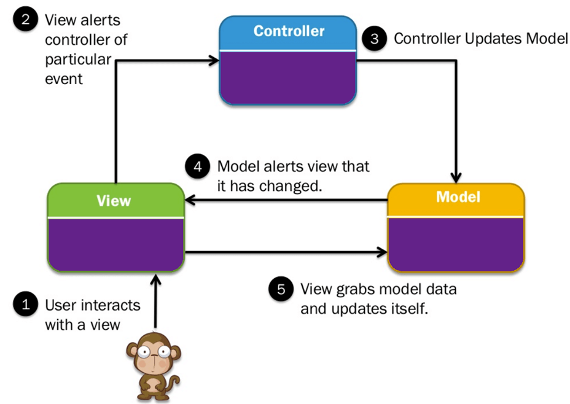
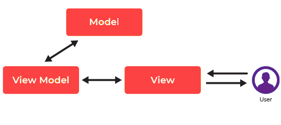
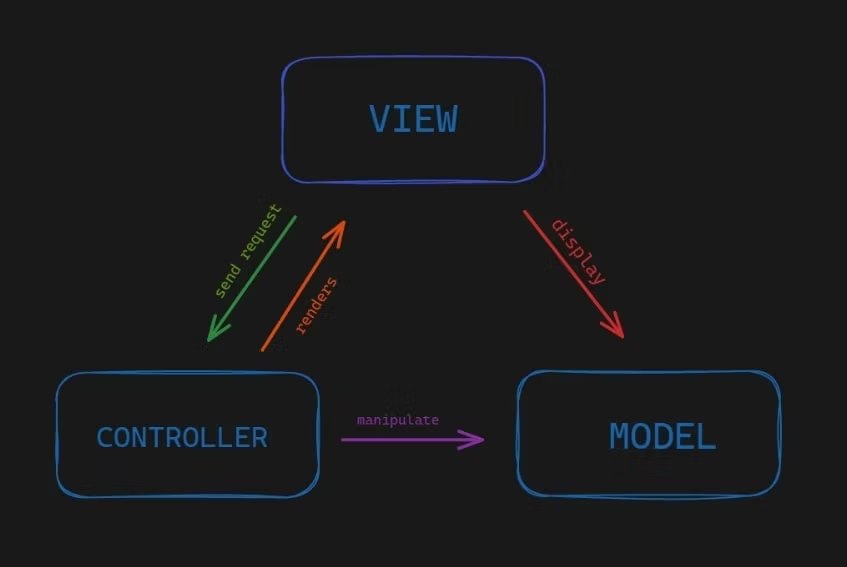
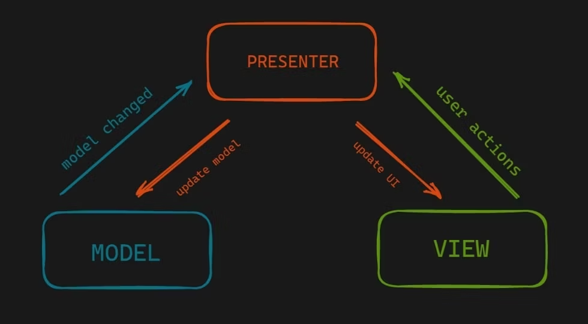
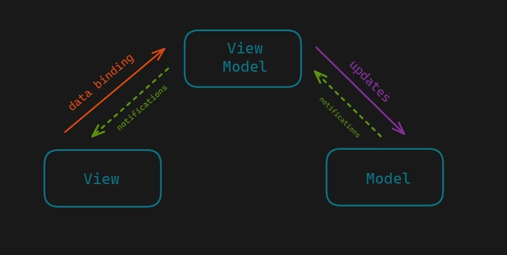

MVC vs MVVM - Difference Between Them
Author: M. Martin
Date: 2023-01-28
Summary
- Key differences b/w MVC and MVVM
- MVC framework: an architectural pattern that separates an application into three main logical components Model, View, and Controller
- MVVM framework: facilitating a separation of development of the graphical user interface with the help of mark-up language or GUI code
- controller in MVC: the entry point to the Application
- View in MVVM: the entry point to the Application
- MVC Model component: tested separately from the user
- MVVM model: easy for separate unit testing, and code in event-driven
- “one to many” relationships
- MVC: b/w Controller & View
- MVVM: b/w View & View Model
MVC Pattern
- MVC architecture
an architectural pattern that separates an application into three main logical components, Model, View, and Controller
a component built to handle specific development aspects of an application
separating the business logic and presentation layer from each other
mainly used for desktop graphical user interfaces (GUIs)
components
- Model: including all the data and its related logic
- View: presenting data to the user or handling user interaction
- Controller: interface b/w Model and View components
architecture

- Model component
- storing data and related logic
- representing data being transferred between controller components or any other related business logic
- example:
- a Controller object retrieving the customer info from the database
- Model: manipulate data and send it back to the database or use it to render the same data
- View component
- part of the Application that represents the presentation of data
- created by the data gathered from the model data
- requesting the Model to give information so that it resents the output to the user
- representing the data from charts, diagrams, and table
- example: any customer view will include all the UI components like text boxes, dropdowns, etc.
- Controller component
- part of the Application that handles the user interaction
- interpreting the mouse and keyboard inputs from the user, informing the Model and the View to change as appropriate
- sending commands to the Model to update its state, e.g., saving a specific document
- sending commands to its associated view to change the View’s presentation, e.g., scrolling a particular document
- Features of MVC
- easy and frictionless testability
- highly testable, extensible and pluggable framework
- leveraging existing features offered by ASP.NET, Django, JSP, etc
- offering full control over your HTML as well as your URLs
- supporting Test Driven Development (TDD)
- offering separation of logic
- allowing routing for SEO Friendly URLs
- offering to map for comprehensible and searchable URLs
- Advantages of MVC
- easier support for a new type of clients
- able to be developed parallely
- avoiding complexity by dividing an application into separate (MVC) units
- using a front controller pattern that processes web application requests using a single controller
- offering the best support for test-driven development
- working well for Web apps, which are supported by large teams of web designers and developers
- providing a clean separation of concerns (SoC)
- all classed and objects independent of each other \(\implies\) test separately
- allowing logical grouping of related actions on a controller together
- Disadvantages of MVC
- business logic mixed with Ul
- hard to reuse and implement tests
- no formal validation support
- increased complexity and inefficiency of data
- the difficulty of using MVC with the modern user interface
- a need for multiple programmers to conduct parallel programming
- knowledge of multiple technologies is required
MVVM Pattern
- MVVM architecture
facilitating a separation of development of the graphical user interface with the help of mark-up language or GUI code
view model: a value converter that means that it is view model’s responsibility for exposing the data objects from the Model in such a way that objects are easily managed and presented
offerring two-way data binding between view and view-model
automating the propagation of modifications inside View-Model to the view
view-model: making use of observer pattern to make changes in the view-model
architecture

- Model component
- storing data and related logic
- representing data being transferred between controller components or any other related business logic
- example
- a Controller object will retrieve the student info from the school database
- Model: manipulate data and send it back to the database or use it to render the same data
- View component
- UI components like HTML, CSS, jQuery, etc.
- held responsible for displaying the data which is received from the Controller as an outcome
- also transformed Model(s) into the User Interface (UI)
- View Model component
- responsible for presenting functions, commands, methods, to support the state of the View
- accountable to operate the model and activate the events in the View
- Features of MVVM
- written for desktop application with data binding capabilities – XAML and the INotifyPropertyChanged interface
- doing modification in the View-Model \(\implies\) the View-Model using an observer pattern
- mostly used by WPF, Silverlight, nRoute, etc.
- Advantages of MVVM
- business logic decoupled from UI
- easy to maintain and test
- easy to reuse components
- loosely coupled architecture: making application architecture as loosely coupled
- writing unit test cases for both the viewmodel and Model layer w/o the need to reference the View
- Disadvantages of MVVM
- maintenance of lots of codes in controller
- some people think that for simple UIs of MVVM architecture can be overkill
- not offering tight coupling between the view and view model
Difference between MVC and MVVM Architecture
Comparisons of MVC and MVVM
Feature
MVC (Model View Controller)
MVVM (Model View ViewModel)
Entry point to the Application
Controller
View
One to many relationships
Controller & View
View & View Model
View reference
not to the Controller
to the View-Model
Age
old Model
relatively New Model
Disadvantages
read, change, to unit test, and reuse
complicated debugging process w/ complex data bindings
Testing
component tested separately from the user
separate unit testing and event-driven code
Difference Between MVC, MVP and MVVM Architecture Pattern in Android
Institute: Geek4Geek
Date: 2022-12-22
Architecture pattern
- giving modularity to the project files
- assuring that all the codes get covered in Unit testing
- making the task easy for developers to maintain the software
- to expand the features of the application in the future
- popular models and industry-recognized android architecture pattern
The Model-View-Controller (MVC) pattern
- splitting the code into 3 components
- creating the class/file of the application
- Model:
- storing the application data
- w/o knowledge about the interface
- responsible for handling the domain logic (real-world business rules)
- communication with the database and network layers
- View:
- the UI (User Interface) layer
- holding components visible on the screen
- providing the visualization of the data stored in the Model
- offering interaction to the user
- Controller:
- establishing the relationship between the View and the Model
- containing the core application logic
- retrieving informed of the user’s response
- updating the Model as per the need
 Pattern")
The Model-View-Presenter (MVP) pattern
- overcoming the challenges of MVC and providing an easy way to structure the project codes
- providing modularity, testability, and a more clean and maintainable codebase
- Model:
- layer for storing data
- responsible for handling the domain logic(real-world business rules)
- communication with the database and network layers
- View:
- UI (User Interface) layer
- providing the visualization of the data
- keeping a track of the user’s action in order to notify the Presenter
- Presenter:
- fetching the data from the model
- applying the UI logic to decide what to display
- managing the state of the View
- taking actions according to the user’s input notification from the View
 Pattern")
The Model-View-ViewModel (MVVM) pattern
- w/ some similarities with the MVP (Model-View-Presenter) design pattern
- the Presenter role played by the ViewModel
- drawbacks of the MVP pattern solved by MVVM
- separating the data presentation logic (Views or UI) from the core business logic part of the application
- Model:
- responsible for the abstraction of the data sources
- Model and ViewModel working together to get and save the data
- View:
- purpose: to inform the ViewModel about the user’s action
- observing the ViewModel
- not containing any kind of application logic
- ViewModel:
- exposing those data streams which are relevant to the View
- serving as a link between the Model and the View
 Pattern")
Difference b/w MVC, MVP, and MVVM design patterns
MVC (MODEL VIEW CONTROLLER)
MVP (MODEL VIEW PRESENTER)
MVVM (MODEL VIEW VIEWMODEL)
One of the oldest software architecture
Developed as the second iteration of software architecture which is advance from MVC.
Industry-recognized architecture pattern for applications.
UI (View) and data-access mechanism (Model) are tightly coupled.
It resolves the problem of having a dependent View by using Presenter as a communication channel between Model and View.
This architecture pattern is more event-driven as it uses data binding and thus makes easy separation of core business logic from the View.
Controller and View exist with the one-to-many relationship. One Controller can select a different View based upon required operation.
The one-to-one relationship exists between Presenter and View as one Presenter class manages one View at a time.
Multiple View can be mapped with a single ViewModel and thus, the one-to-many relationship exists between View and ViewModel.
The View has no knowledge about the Controller.
The View has references to the Presenter.
The View has references to the ViewModel
Difficult to make changes and modify the app features as the code layers are tightly coupled.
Code layers are loosely coupled and thus it is easy to carry out modifications/changes in the application code.
Easy to make changes in the application. However, if data binding logic is too complex, it will be a little harder to debug the application.
User Inputs are handled by the Controller.
The View is the entry point to the Application
The View takes the input from the user and acts as the entry point of the application.
Ideal for small scale projects only.
Ideal for simple and complex applications.
Not ideal for small scale projects.
Limited support to Unit testing.
Easy to carry out Unit testing but a tight bond of View and Presenter can make it slightly difficult.
Unit testability is highest in this architecture.
This architecture has a high dependency on Android APIs.
It has a low dependency on the Android APIs.
Has low or no dependency on the Android APIs.
It does not follow the modular and single responsibility principle.
Follows modular and single responsibility principle.
Follows modular and single responsibility principle.
MVC, MVP, MVVM: Which One to Choose?
AAuthor: Rosa Tiara Galuh
Date: 2022-08-11
- Architectural pattern
- clarifying and defining some crucial components of a software architecture
- an image of a system, not an architecture
- a general and reusable solution to a commonly occurring problem in software architecture in a certain context
- Design pattern
- a formalized best practice used to solve common problems when designing an application or system
- Difference b/w architectural and design patterns
- pattern in software: a recurrent property to break down a huge and complex structure into smaller, simpler components
- using to craft a general solution for a class of problems
- using different tools in each level of software development
- smaller levels: design patterns
- larger levels: architectural patterns
- programming paradigms at the implementation level
- Architectural design patterns
- solving common problems
- benefits
- split complex tasks into simpler tasks
- reduce bugs
- produce testable and maintainable code
- Model terminologies
- Model:
- storing data and communicates directly with the database
- representing data and application logic
- defining the business rules that manage data handling, modification, or processing
- View
- displaying the model’s data
- responsible for the data’s representation in the user interface
- ViewModel
- exclusive to MVVM pattern
- an abstraction of the view layer and also acts as a wrapper for the model data
- Controller: integrateing the view and model
- Presenter
- a component that only exists in the MVP model
- retrieving the input from the view component
- processing the data with the help of the model
- Model:
- Model-View-Controller pattern
- first and popular in the field of web applications
- building an application around Separation of Concerns (SoC)
- eases the effort to test, maintain, and develop application
- no understanding of the view or the controller
- observer receiving an alert whenever there’s a change in the view and controller
- controller helping the routing process to connect the model to the relevant view
- advantages
- separation of concerns (more focused)
- making it easier to test and manage the code
- promoting decoupling of the application’s layers
- better code organization and reusability
- SOC \(\to\) reducing the code size and making a good code that is clean and manageable

- Model-View-Presenter pattern
- sharing two components with MVC: model and view
- replacing the controller with the presenter
- allowing user to mock the view more easily
- presenter:
- used to present something
- w/ the functionality of the “middle-man”
- all presentation logic is pushed to it
- workflow
- receiving input from the user via the view
- processing the user’s actions with the help of the model
- passing the results back to the view
- communicating with the view through interfaces
- view and presenter: independent of one another and interact via an interface

- Model-View-ViewModel pattern
- the modern evolution of MVC
- main goal: providING a clear separation between the domain logic and presentation layer
- SupportING two-way data binding between the view and viewmodel
- allowING to separate Code’s view and model
- model changes \(\iff\) view remaining the same
- viewmodel: doing unit testing and testing logic behavior without involving the view

- Usage scenarios for MVC, MVP, and MVVM
- MVC
- an implementation of Separation of Concerns
- working well if separating the data (model), the data crunching (controller), and data presentation (view)
- serving well in an application where the data source and/or the data presentation can change at any time
- MVP
- using w/ application has a bidirectional flow
- request something from the model and change the UI immediately
- MVVM
- to share a project with a designer and the design and development work can happen independently
- requiring unit testing for your solutions
- to have reusable components, both within and across projects in your organization
- more flexibility to change your views without having to refactor other logic in the code base.
- MVC